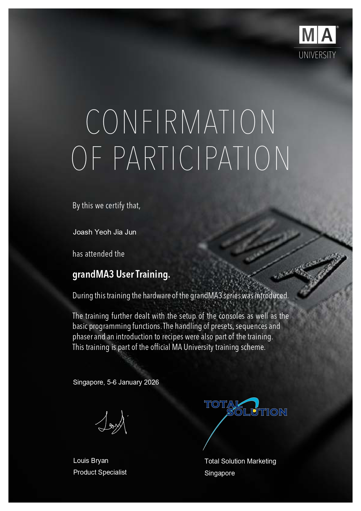
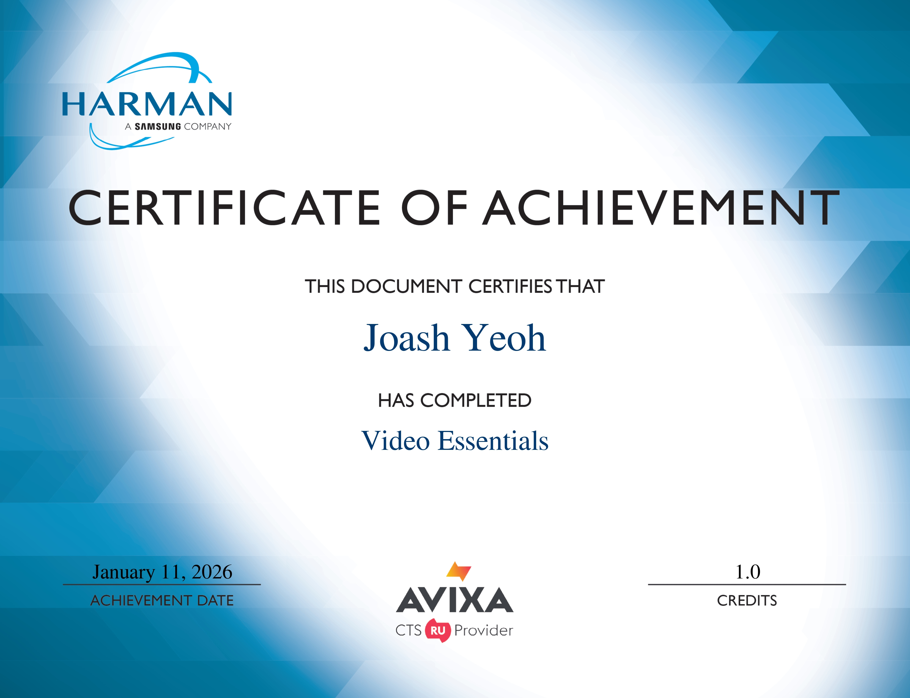

Detail-Oriented
Atention to technical details and quality in every aspect of production.
Team Player
Strong collaboration skills with experience working in diverse production teams.
Quick Learner
Eager to learn new technologies and techniques in the ever-evolving AV industry.
Problem Solver
Adaptable and resourceful in handling technical challenges during productions.
Diploma in Infocom and Media Engineering
Nanyang Polytechnic 2024 - PresentSpecalised in Media Technology & Systems. Through the three academic years, covering various aspects of computer programming, web design and development, networking and specialised in AV systems and infrastructure.
Singapore-Cambridge GCE O-Level Graduate
Canberra Secondary School 2020 - 2023Accomplishment of the Singapore-Cambridge General Certificate of Education Ordinary Level (GCE O-Level), attaining a L1R5 score of 13 and L1R4 of 10.
Singapore Primary School Leaving Examination
Endeavour Primary School 2014 - 2019Accomplishment of the Singapore Primary School Leaving Examination, attaining a T-score of 224.
Multi Media Live Graphics Operator Crew
Hope SingaporeAs a volunteer crew, I work with graphics for live-productions, and with video projection systems to integrate graphics and lower-thirds for broadcast as well as live LED wall projections.

GrandMA3 Operator Certification
Nanyang Polytechnic
Harman Video Essentials Certification
Nanyang Polytechnic
Q-SYS Level Zero
Nanyang Polytechnic